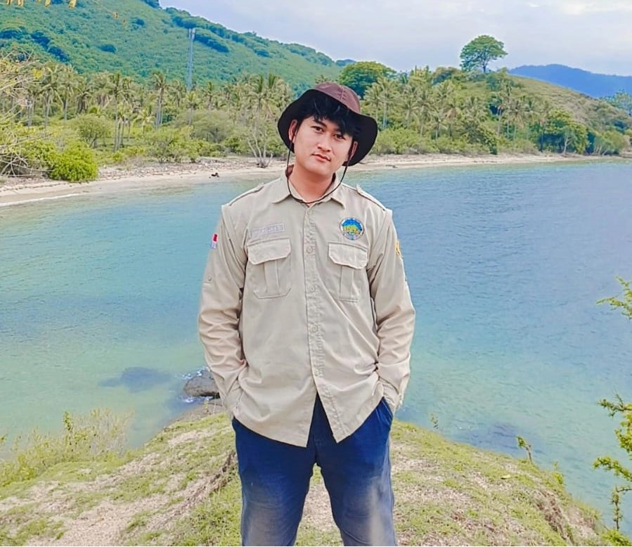

Hi I am
Completed
Projects
Passion &
Dedication
Lines of
Code

Halo! Saya adalah seorang mahasiswa di Universitas Mataram sekaligus Full-Stack Web Developer yang penuh semangat. Berawal dari sekadar hobi coding, saya kini berfokus menguasai berbagai teknologi pengembangan perangkat lunak, baik di sisi antarmuka web maupun pemrograman backend menggunakan Java.
Saya memiliki ketertarikan yang sangat mendalam pada industri perbankan dan inovasi financial technology (Fintech). Secara khusus, saya sangat antusias dalam mempelajari sistem Core Banking seperti Temenos T24, terutama pada Modul AA (Arrangement Architecture). Mengintegrasikan keahlian programming dengan pemahaman alur sistem perbankan adalah tantangan yang selalu memotivasi saya untuk terus berkembang.
Membangun website responsif dan interaktif menggunakan HTML, CSS (Flexbox), JavaScript, serta teknologi front-end modern untuk pengalaman pengguna yang optimal.
Merancang logika sistem, pemrograman berbasis objek (OOP) dengan Java, dan penyelesaian masalah algoritma untuk mendukung fungsionalitas aplikasi.
Eksplorasi dan pemahaman arsitektur sistem Core Banking, khususnya Modul Temenos T24 AA (Arrangement Architecture), untuk mendukung integrasi ekosistem finansial digital.
Saya selalu terbuka untuk mendiskusikan peluang baru, proyek pengembangan web, atau sekadar bertukar wawasan seputar IT dan sistem perbankan. Jangan ragu untuk menyapa!
g1b022047@student.unram.ac.id
Kirim via Gmail